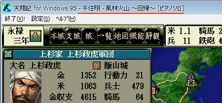
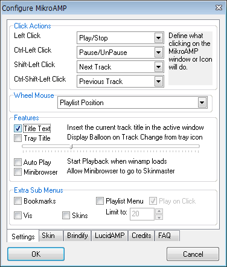
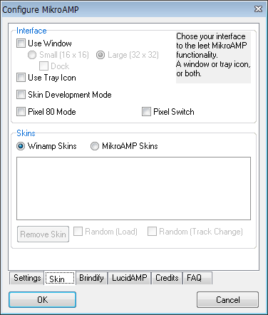
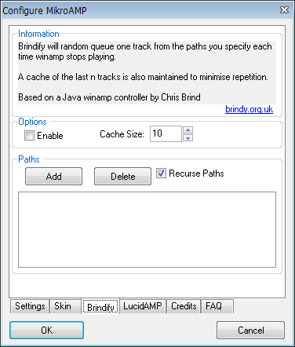
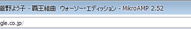
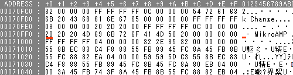
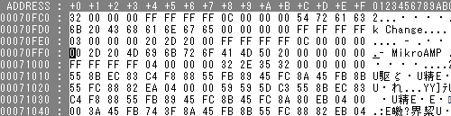

<h2>天翔記とWinamp</h2>
<ol>
    <li>下記は、天翔記で_inmmの再生対象をWinampにしている人を対象とした内容です。<br><br>
    <br><br>
    <li>Winampにしている場合、上図のようにタイトルに再生中の｢曲名｣を表示することが出来ます。<br>
    <li>これは特に天翔記や_inmmとは無関係で、Winampのプラグインに｢アクティブウィンドウのタイトルに再生中の曲を表示する｣という機能を持つプラグインがあります。
    <li>それは｢MikroAMP｣です。⇒<a href="http://www.winamp.com/plugin/mikroamp-v2-point-52/63522">MikroAMP Plug-in</a>
</ol>
<h4>MicroAMP</h4>
<ol>
    <li>MicroAMPは元々は、｢Winampをまるまる表示せずに再生中の曲を認識し、コントロールする｣というところに焦点が当てられたプラグインです。<br>
    <li>その主眼は、｢小さなアイコン｣でWinampの再生･停止をコントロールすることですが、補助機能として、｢再生中の曲をアクティブウィンドウに表示する｣という機能をONに出来ます。
    <li>設定は下記のように行います。<br>
    <br><br>
    <br>
    <br>
</ol>
<h4>MicroAMPへのパッチ</h4>
<ol>
    <li>上記の設定を行うと、機能しますが、残念ながら下図のように、タイトル部分に ｢ - MicroAMP 2.52｣のような文字が入ります。
    これは同考えても邪魔でしょう。これを消しましょう。<br><br>
    <br>
    <li>Winampのインストールフォルダ以下、Pluginフォルダの｢gen_mikro.dll｣を編集します。
    (<b>Winampが起動していると編集できない＆反映されないので、Winampは一端終了させましょう)</b><br>
    <br>
    <br>
    　↓<br>
    <br>

    <li>以上で｢ - microAMP 2.52｣という文字は表示されなくなります。
</ol>
<dl>
    <dt>
    <div class="download_file">DOWNLOAD ⇒ <a href="%(file)s">パッチ適応済 gen_mikro.dll</a>ファイル。</div>
    </dt>
    <dd>
    <div class="update_time">└更新日 %(year)04d/%(mon)02d/%(mday)02d</div>
    </dd>
</dl>
